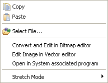
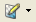
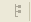

Figure: Layers View
Context menu- – layers and images

| Copy | This option allows you to copy the of the elements in the layers view |
| Paste | This option to paste previously copied elements into the element |
| Select File... | This option allows you to select an image file for the selected element |
| Convert and Edit in Bitmap editor | This option allows you to conver the image into *.bmp and edit the file in the bitmap editor |
| Edit Image in Vector editor | This option allows edit selected image in the vector editor |
| Open in system associated program | This option allows you to open the selected element in the system assoicated program installed in your system |
| Stretch Mode | This option allows you the option to set the image's mode to stretch mode or to maintain the aspect ratio. |
Tool Bar
| Copy the selected element from the layers view | |
| Paste the previous copied element in the layers view | |
| Edit/animate the selected element from the layers view | |
|  | Edit /Convert the selected image using different editors |
|  | Displays all the colours in the element |
| Clear all the actions | |
 |
Minimize layers view |
 |
Maximize layers view |
 |
Close layers view |